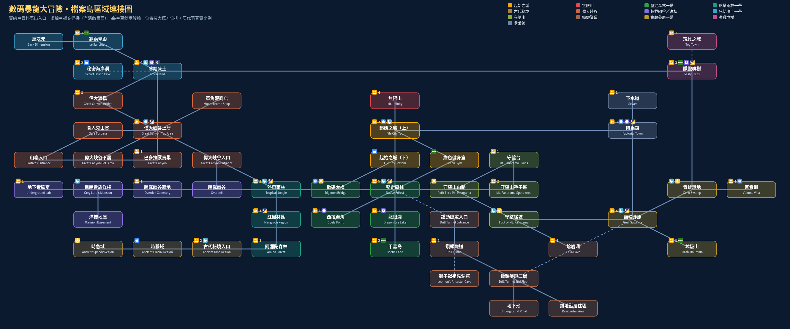

互動地圖（區域連接圖）
靜態總覽圖

⬇️ 下載總覽圖 PNG
互動地圖
呢張係本站用 SydMontague 資料表嘅「Map Setup」（257 個畫面所屬區域）同「Dodges」（畫面之間嘅出入口）自動整理出嚟嘅區域連接圖，按大概方位排成格仔（起始之城喺中間），唔代表真實比例。實線＝資料表有嘅出入口；虛線＝資料表冇（冇遇敵嘅畫面），由畫面描述／招募指南補上。撳區域睇詳情。
起始之城無限山堅定森林一帶熱帶雨林一帶古代秘境偉大峽谷超載幽谷／洋樓冰結凍土一帶守望山鑽頭隧道齒輪莽原一帶朦朧群樹階乘鎮
👆 撳地圖上嘅區域
廁所位置只根據 Map Setup 畫面描述有寫「Toilet」嘅畫面（加起始之城），未必齊。限時敵人資料來自巴哈姆特技能表（白天／夜晚）。招募位置按 HeroesAndCons 招募指南分區（＊＝唔入城，但係招募其他村民需要）。
📎 參考：SydMontague – Digimon World 資料表（Google Sheets） ｜ HeroesAndCons – Recruitment Guide（GameFAQs 招募指南） ｜ 巴哈姆特 – 數碼寶貝大冒險 學習技能一覽（中／日／英名＋出現敵人地區） ｜ SydMontague & Ginoshie – Digimon World 機制文件（Google Docs）